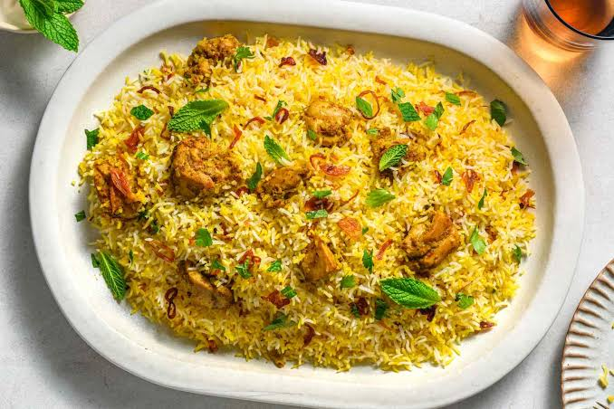
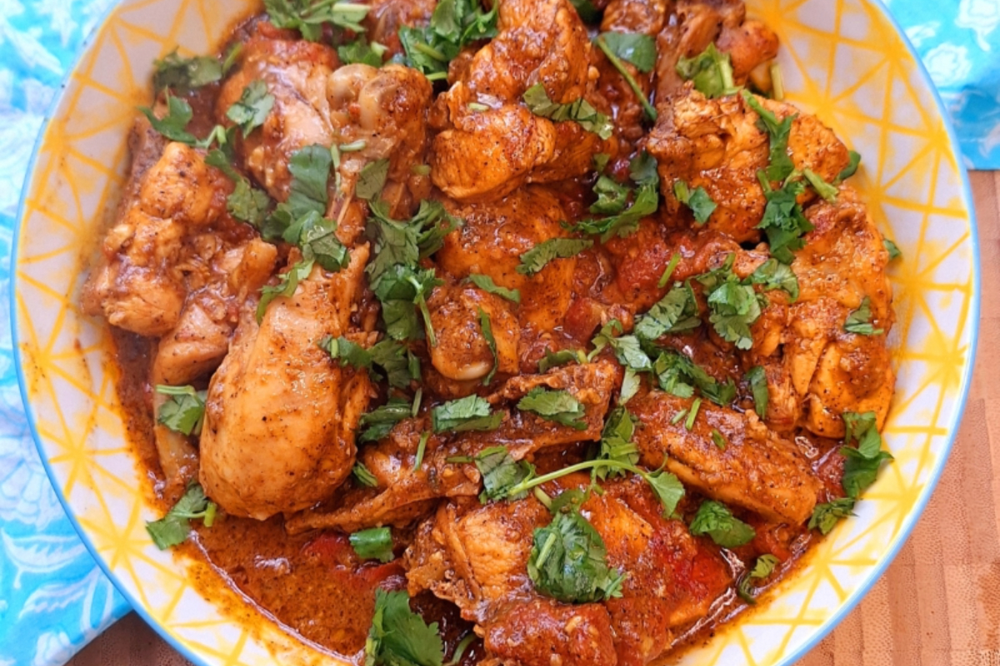
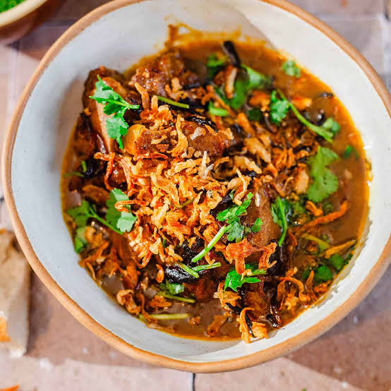
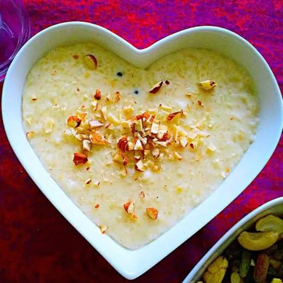

Biryani
Biryani is a popular Pakistani rice dish made with rice, meat and a variety of spices. It is mostly enjoyed at family gatherings and celebrations, however celebrations are incomplete without biryani.


Biryani is a popular Pakistani rice dish made with rice, meat and a variety of spices. It is mostly enjoyed at family gatherings and celebrations, however celebrations are incomplete without biryani.

Chicken karahi is a traditional Pakistani dish made with chicken, tomatoes, spices and herbs. It is an important part of the culture when it comes to food.

Nihari is a slow cooked meat dish with rich spices. It is often served with naan (bread) and is enjoyed as a traditional Pakistani meal.
Pakistani sweets are often enjoyed during celebrations such as Eid, weddings and family gatherings. They are commonly shared at every occasion.
